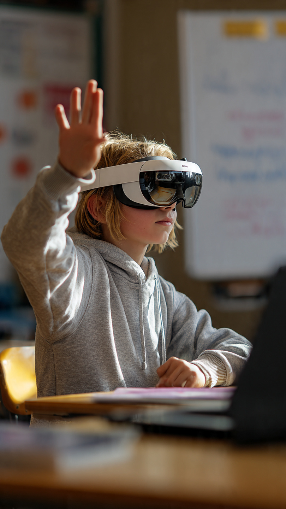

The future of classrooms is smart, digital, and powered by Artificial Intelligence
Education is undergoing one of the biggest transformations in history. The rise of Artificial Intelligence (AI) is reshaping how students learn, how teachers teach, and how schools operate. From smart classrooms to AI tutors, technology is making learning more personalized, interactive, and efficient. In 2026, AI is no longer a future idea— it is already part of everyday education systems across the world.
One of the biggest advantages of AI in education is personalized learning. Every student learns differently. Some students understand quickly, while others need more time. AI-powered systems analyze student performance and adjust lessons according to their needs. This ensures that no student is left behind. Adaptive learning platforms provide customized quizzes, video lessons, and practice exercises based on individual progress.
Earlier, students had to wait for teachers to clear doubts. Now, AI tools can instantly answer questions. Chatbots and smart assistants help students solve problems in real-time. These systems use large knowledge databases to provide step-by-step explanations in subjects like Mathematics, Science, and English. This reduces dependency on classroom time and encourages self-learning.
AI-powered tutoring systems act like personal teachers available 24/7. These systems track student progress, identify weak areas, and suggest improvement plans. For example, if a student struggles in algebra, the system will automatically provide extra practice questions and video explanations. This type of learning support was not possible in traditional classrooms.
Many schools are now introducing coding and AI education from Class 6 onwards. The goal is to prepare students for future careers in technology. Students learn programming basics, logic building, and problem-solving skills at an early age. Governments and education boards are also encouraging schools to include AI literacy in the curriculum.

AI brings many benefits to the education system. It improves learning speed, reduces stress on teachers, and increases student engagement. Digital tools make classrooms more interactive with videos, simulations, and virtual labs. Students can learn anytime and anywhere, making education more flexible than ever before.
Despite its advantages, AI also has challenges. Not all schools have access to advanced technology. There are concerns about data privacy and over-dependence on machines. Teachers still play an important role in guiding students, motivating them, and building character, which AI cannot replace.
In the future, classrooms will become more intelligent and interactive. Virtual reality (VR) and AI will combine to create immersive learning environments. Students may explore historical events, science experiments, and space missions in virtual worlds. Education will become more practical and experience-based.
The rise of AI in education marks a new era of learning. It is transforming traditional classrooms into smart learning environments. While technology continues to evolve, the role of teachers remains essential. The best future education system will combine human guidance with artificial intelligence to create powerful learning experiences for students.